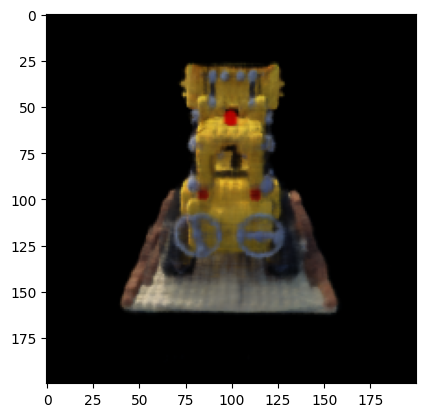

Introduction
In this project, we want to be able to reconstruct a scene viewed from any view direction and camera position, by building a neural network representation of this 3D scene and training it with a subset of data consisting of a limited number of images.
Part 1: Fit a Neural Field to a 2D Image
Here, I mainly try to solidify my understanding by first building a Neural Field representation of a purely 2D scene, where we attempt to map (u, v) to a rgb color (r, g, b), where (u, v) is simply the xy pixel coordinate. I created a Neural Network architecture as per the bottom image.

I assume that x is a batched tensor of shape (B, 2), a list of B coordinates in 2D space. For each coordinate value, I create its positional embedding, a vector of size 2*L + 1, as per the below image. I chose to use L=10, which provides significantly more information about the coordinate values, which helps our training. After doing this for both coordinate values u and v, I concatenate, to create a resulting tensor of shape (B, 2(2*L +1)), the Positional Encoding (PE).
Then, I pass this PE through a list of hidden layers with hidden dimension = 256, and after a final linear model, we end up with a vector of size 3, which we process with the sigmoid function to get the final RGB value.
To prevent memory errors, we do not predict every pixel value. Instead, we predict a randomly chosen subset of N pixels. To make the process simpler, I make a custom Dataloader which can load both the (x,y) coordinates and their rgb colors of N pixels randomly. To make the input and outputs in the range of [0,1] (to make training more stable), we normalize both the (x,y) and rgb values in the Dataloader.
The hyperparameters we tested are as follows:
| Hyperparameters | L | no_hidden | Lr |
|---|---|---|---|
| h1 | 10 | 3 | 1e-2 |
| h2 | 20 | 3 | 1e-3 |
| h3 | 10 | 5 | 1e-3 |
| h4 | 20 | 5 | 1e-2 |
| h5 | 10 | 2 | 1e-3 |
We see that hyperparameter 3 performs the best in terms of PSNR score, getting a score of 26.95 for PSNR. For this best result, we plot the results!
The fox image is as below:The iterations 1, 2, 3 correspond to training at [400, 800, ..., 2400] iterations
The PSNE score across iterations The MSE Loss across iterations
The MSE Loss across iterations
Using the best model trained with best hyperparameters, we plot the reconstruction results on a different image!

Original Image
Reconstructed Final Image
Part 2: Fit a Neural Radiance Field from Multi-view Images
Part 2.1: Create Rays from Cameras
Here, I implemented three functions, pixel_to_camera, transform and pixel_to_ray.
The first one is responsible for taking a camera coordinate (u,v) and returning the global coordinates (x, y, z), given the camera's intrinsic matrix as well as a scaling factor.
The second one is responsible for taking a camera to world transformation matrix (given as a specification of the camera, an input variable), and using it to generate the world coordinate.
The third one calculates a ray origin and a ray direction given the K intrinsic matrix for the camera, camera to world transformation matrices, and the 2d coordinates (u,v) of a pixel from the camera.
For convenience of training, all inputs are assumed to be batched. The images are assumed to be passed in with shape (B, H, W, C), B=batch, C=channel. The uv's are passed in also as shape (B,H,W,3), where uv[..., 0] is the batch, uv[..., 1] is the y axis values, and uv[..., 2] is the x axis values. With this way, we can parallelize all operations using torch tensor processing approaches.
Part 2.2: Sampling
Sampling Rays from Images
Using the batching approach described above, I first create uv as a meshgrid of all the possible pixel coordinates and batch size positions. Then I invoke the pixel to ray method directly with my batched inputs, and the constant K matrix, as well as the camera to world matrices.
For the sampling strategy, I chose to flatten all the images first, then randomly select pixels from the flattened pixels of the image. With these pixels, I pass them directly into pixel_to_ray, to get the desired r_0 and r_d which define a ray.
Sampling Points along Rays
Here, we make a new function, sample_along_rays which takes each ray origin and direction and outputs a bunch of points, defined by the value of n_samples. These points are sampled uniformly from near=2.0 and far=6.0 units away from ray origin, in the direction of the ray direction. Given the batched scenario, the new points sampled will be of shape (n_samples*B, H, W, C).
Part 2.3: Putting the Dataloading All Together
With the above functions already defined, the implementation of the Dataloader is complicated but straightforward. We create a tensor that contains every possible uv coordinates and batch. Then we use this uv and the c2w_train and pass it into the pixel_to_ray method to get the resulting r_0, r_d vectors. We also flatten the target list of images, to get image_flatten. Then, for the sample_rays method, we simply get random indices, and sample our r_0, r_d and image_flatten vectors to return the corresponding set of rays origins, directions and pixel values.
Here is the visualization of the lego scene, with the train images, on viser: Here is the visualization of one image in the scene, with color labeled on the points, on viser:Part 2.4: Neural Radiance Field
Here at this step, I am finally ready to start building the architecture of the model that will be used to predict the 3D scene! Let us first clarify some specifications.
For the input, we want the model to be able to take in a 3d pixel coordinate, as well as a ray direction. This effectively defines both a position and an angle of view, which is enough information. It should be trained, given these values, to predict the color at this specific pixel coordinate, as well as the optical density of this point.
The model follows the following architecture:
The biggest problem here to solve, unsurprisingly, is also the batched inputs problem. The pixel values passed in is going to be of shape (B, N, 3), since for every ray direction we sample N=n_samples points along that ray direction. So I had to adapt my Positional Encoding code such that it can deal with "doubly-batched" inputs. What worked was, instead of iterating over the last dimension of the input, I iterated over the encoding dimension L and created a list of the PE encodings for every iteration. Then I used torch.cat on dim=-1 and combined these tensors into one tensor, of shape (B, N, PE_dim). This way, the method works regardless of the number of dimensions of the input. The number of dimensions of the input also, very surprising for me, doesn't change the dimension of the encoding.
Many of the concatenations required some intricate tensor manipulations. For example, the ray Positional Encoding and the pixels concatenation involved having to repeat the ray PE to create a new tensor of a compatible shape with the pixel Tensor.
Part 2.5: Volume Rendering
This function, volrend, that I implemented, takes in the density, step_size and pixel values of a point along some ray direction (in order), and returns the rendered color at the pixel point, when seen along the direction of the ray direction. The idea is that, given a list of optical densities passed in (as sigma) where each one corresponds to progressively further sample locations , there is some probability of the ray having terminated at the i'th step_size spatial interval, meaning that light coming from spaces in front of the i'th spatial interval are invisible.
To get the returned color, we use the below equation, carefully summing up each step_size segment's contribution to the color. The discrete and continous version of the volume rendering equation are below.
Discrete Approximation: Continuous Integral:Training and Evaluation:
I first trained the model on 1000 iterations, with lr=1e-3. This took about ~15 minutes and obtained > 23 PSNR. The results obtained are shown below:
PSNR Curve for Final NERF model at 1000 iterations MSE Curve for Final NERF model at 1000 iterations Images taken at model training iterations 0, 50, 100, 500, 1000We can now finally generate a gif of the image with unseen camera positions represented by novel camera to world matrices. Here is one example of an interpolation gif, containing many previously unseen scenes. I interpolate using the c2w_test matrix as well as image_data from the training
Then I finished off the training and had it train for about 1-2 hours more, achieving 5000 epochs, with the same learning rate. This increased model performance to 26.29 PSNR for approximating the 3D scene. Here are some of the results with this new model.
PSNR Curve for Final NERF model at 5000 iteration MSE Curve for Final NERF model at 5000 iterations Images taken at model training iteration 5000  Interpolation Gif of the Lego Scene using Training Data at 5000 iterationsBells & Whistles (Extra Credit)
For my bells and whistles, I attempted to add background color as an option, a customly changeable parameter, so the volumetric rendering doesn't render black all the time as backgrounnd.
To solve this problem, I realised that I had to channge certain things in the volumetric rendering function, specifically the color that it returns. I realized that the deltas * sigmas represented the parameter that tells you how likely the point is to be not transparent. So I thought I could inverse that to get the transparency of that point. To get the transparency of each ray, I took the delta * sigma expression and calculated the negative exponent of the expression summed along the ray's points, to get a tensor representing the calculated metric of transparency along every ray. Then I multiplied this metric of transparency directly by the resulting background color. How transparent the ray is represents the degree to which the background color should contribute to the final color. Finally, I added this multiplication result with the rendered color to get the new final rendered color, which I return.
Interpolation gif with a green background and 1000 iterations:Now, with the 5000 iteration model. There seems to be some smoothing issues in terms of color blending between the foreground and background when I try with the most advanced model. This may be because the 3D model is outputting more continous light fields with more fine-tuned gradients.
Interpolation gif with a red background and 5000 iterations: Interpolation gif with a green background and 5000 iterations:Reflection
There was a lot of debugging errors to get the batching process working. I first wrote code for no batching, assuming uv is a matrix of shape (N, 2). Then I had to change it to support batched inputs. Batched multiplication was very difficult to implement, because I realized after a long time, that I first had to flatten the uv Tensor, which is of shape (B, H, W, C), B=batch, C=channel, to (B, H*W, C), before doing batched multiplication. In the end, rays_o, and rays_d are all of the shape (B, H, W, 3), (B, H, W, 3).
Overall, this was a very difficult project, but I felt I learnt a lot. I really struggled on converting my functions into a suitable format so they could be batched effectively.